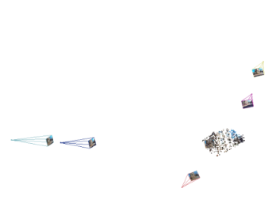
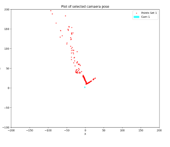
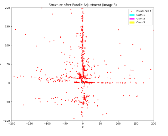
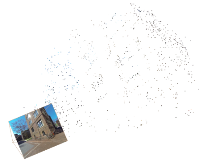

Skills - Epipolar Geometry, SIFT, RANSAC, Essential Matrix, Triangulation, PnP, Bundle Adjustment, VisualSfM
Overview
This project, titled Structure-from-Motion (SfM), implements a full pipeline to reconstruct 3D structures from 2D image sequences using key computer vision techniques. Developed for MCEN5228 at the University of Colorado Boulder, the workflow includes feature matching, fundamental and essential matrix estimation, camera pose extraction, triangulation, and bundle adjustment.
The input comprises six rectified images from a GoPro camera of a building near Levine Hall at UPenn. Feature correspondences were precomputed using SIFT, and matching data was structured into five files. The pipeline handles epipolar geometry, verifies camera poses using the cheirality condition, and applies non-linear refinement through optimization techniques.
Both custom and OpenCV-based implementations were used at various stages to validate correctness and robustness. Final evaluation compares outputs against results from VisualSfM, showing high fidelity in structure reconstruction and pose estimation.

Implementation
- Feature Matching: SIFT keypoints were matched across images with RANSAC used to filter outliers and improve robustness.
- Fundamental and Essential Matrices: Computed using normalized 8-point algorithm with SVD and enforced rank-2 constraint.
- Camera Pose Estimation: Derived four candidate poses from the Essential Matrix and validated with the cheirality condition.
- Linear Triangulation: Implemented using projection matrix formulation and solved with eigen-decomposition for 3D point recovery.
- Non-linear Triangulation: Used
scipy.optimize.least_squaresto minimize reprojection error from initial 3D estimates. - Perspective-n-Point (PnP): Estimated camera pose from 3D-2D correspondences using both linear and RANSAC-based approaches.
- Bundle Adjustment: Refined all 3D points and poses by jointly minimizing reprojection error using visibility constraints and sparse optimization.

Results
The structure-from-motion pipeline was validated against results from VisualSfM. The final 3D reconstruction displayed both camera trajectories and dense point clouds.
- Cheirality Pose Index (OpenCV): 0
- Linear vs Non-linear Reprojection Error (Our F): 5.46 → 5.38
- Linear vs Non-linear Reprojection Error (OpenCV F): 4.00 → 3.98

